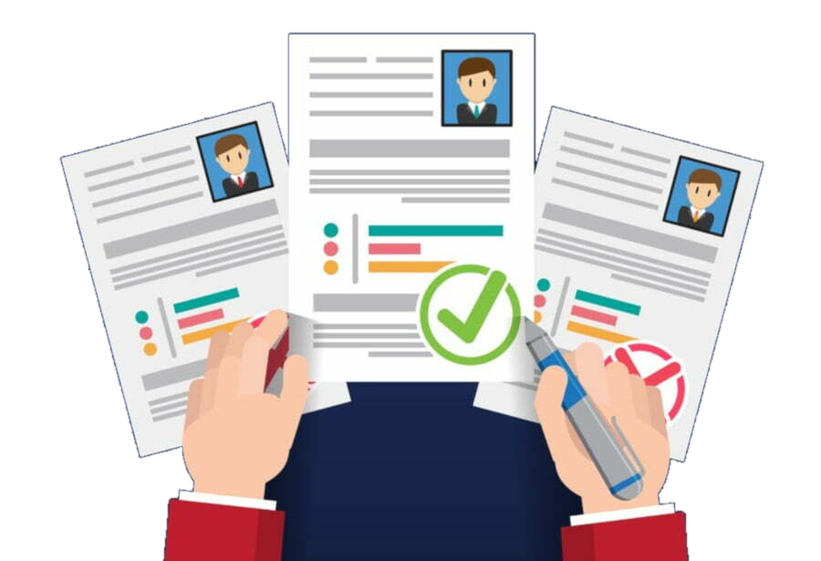

3 sesgos que distorsionan una entrevista de trabajo y cómo reducirlos
En muchas entrevistas, la opinión sobre una persona se forma en los primeros minutos. El resto de la conversación, a veces, solo sirve para confirmarla. No es mala fe: es la forma en que la mente simplifica una decisión compleja.
La selección de personal es una de las tareas centrales de la psicología organizacional. Elegir mal afecta al equipo, al clima laboral y a la propia persona contratada. Por eso vale la pena conocer los atajos que más distorsionan una entrevista y cómo frenarlos.

1. El efecto halo: un rasgo que lo tiñe todo
El efecto halo ocurre cuando una característica positiva contamina el juicio completo. Una persona elocuente o con buena presencia parece, de pronto, también organizada y responsable. Nada de eso se evaluó todavía. La impresión general simplemente ocupó el lugar de la evidencia.
2. El sesgo de confirmación: buscar lo que ya creemos
Una vez formada la primera impresión, tendemos a buscar datos que la confirmen. Es el sesgo de confirmación. Si el candidato nos agradó, hacemos preguntas fáciles y recordamos sus aciertos. Si no, buscamos fallas. La entrevista deja de explorar y empieza a demostrar.
3. El sesgo de afinidad: preferir a quien se parece a nosotros
Compartir universidad, aficiones o forma de hablar genera una simpatía inmediata. Esa conexión se siente como intuición, pero muchas veces es solo familiaridad. Contratar por afinidad produce equipos parecidos entre sí, no necesariamente equipos competentes. Además, deja fuera perspectivas que el equipo necesita.
Cómo reducirlos: estructura antes que intuición
Los sesgos no desaparecen con buena voluntad, pero sí se reducen con estructura. Los metaanálisis en psicología organizacional muestran que la entrevista estructurada predice mejor el desempeño que la conversación improvisada. La diferencia se resume así:
| Entrevista improvisada | Entrevista estructurada |
|---|---|
| Preguntas distintas para cada candidato | Las mismas preguntas para todos |
| Criterios que surgen durante la charla | Criterios definidos antes de entrevistar |
| Un solo evaluador | Varios evaluadores que comparan notas |
| Preguntas hipotéticas | Preguntas sobre conductas reales del pasado |
Una pregunta conductual, como "cuéntame de una vez que resolviste un conflicto", pide hechos en lugar de promesas. Así, la conversación se apoya en evidencia y no solo en la impresión.
Para cerrar, de vuelta a los primeros minutos
Los primeros minutos de una entrevista seguirán dejando una huella. La diferencia está en tratar esa impresión como una hipótesis, no como una conclusión. Esa es la mirada que quiero aportar desde la psicología industrial: menos corazonada y más comprensión de la persona.